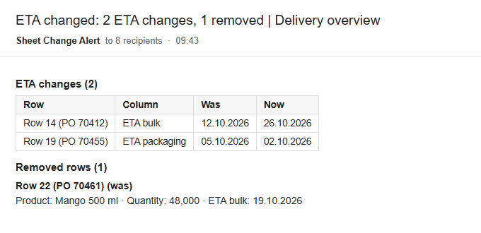
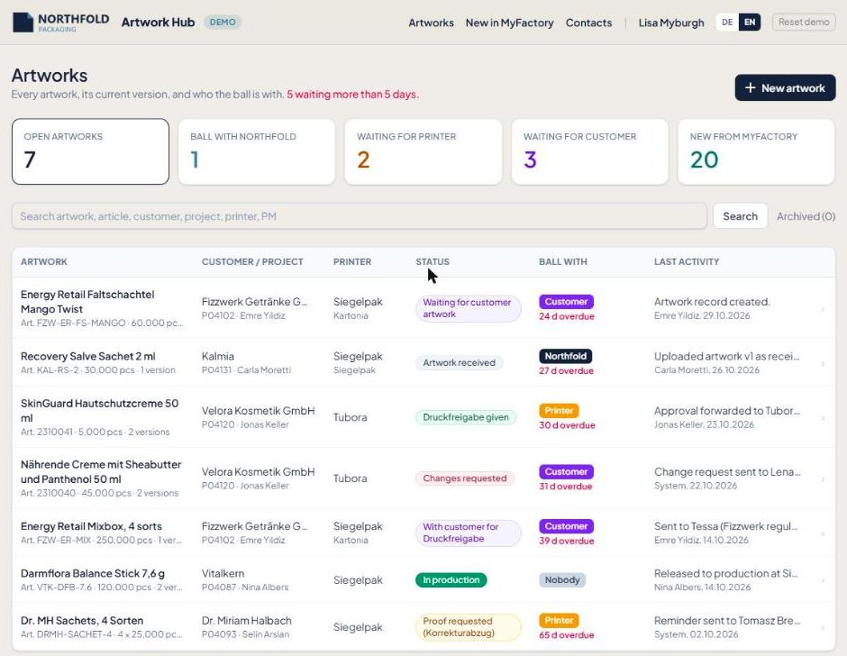
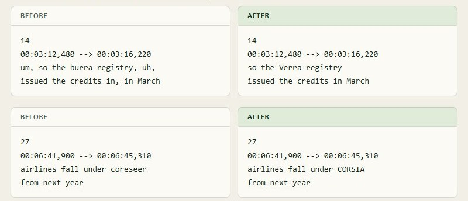
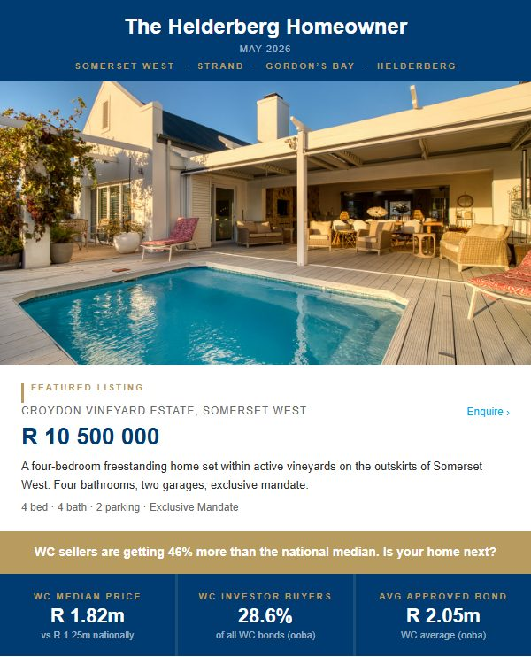

Portfolio · 2026
Lisa Myburgh
I build automations and internal tools that take repetitive work off a team. Through RAY AI I'm placed with one client CEO at a time: currently a German packaging manufacturer, and before that Senken, a Berlin carbon-markets SaaS. I walk into someone else's business, learn how it runs, and build something the team keeps using after I leave.
I work in n8n, Make.com, Power Automate and code, with Claude across the API, Claude Code and skills. I build for handover, so teams can run what I ship. Winner of RAY AI's internal AI hackathon.
Selected work · 2026
Client work is anonymised. Where the real system is private, the picture is a diagram or a sample with invented data, and it says so.
Automation · n8n + Claude + HubSpot · Property and motor
Answers lettings and car dealership enquiries in 6 to 15 seconds, day or night, with a booking link. Complaints and anything uncertain go to a VA with a summary, and the customer gets a holding reply. Every lead is logged in Google Sheets and HubSpot, bookings from Cal.com are matched back to the lead, and the manager gets an alert if a step fails. Tested on enquiries it had never seen: every one that needed a person went to a person, for under a penny of AI per enquiry. Shown with demonstration data.
Automation · Power Automate + Office Scripts · Packaging manufacturer
The CEO updated a 3,900-row order list by hand every morning. A Power Automate flow and an Office Script now update it from the ERP's closure emails, log every change, and hold anything unclear for a person. First live batch: 11 written, 4 correctly held, 0 failed.
Automation · Google Apps Script · Packaging manufacturer
A key customer kept changing delivery dates in a shared sheet without telling anyone. A read-only script checked it every 30 minutes and emailed eight people the exact cells that changed, old value next to new. In its first week it caught POs the customer had deleted by accident. It ran from September to November 2026 with no errors, until the customer retired the sheet. Handed over with a runbook.

Internal tool · Next.js + Claude · Packaging manufacturer
Print-artwork approvals lived in email threads, and the vendor tool on offer was a five-figure annual licence. In two days I built a working demo: one record per artwork with version history, browser links so printers upload proofs and customers approve without email, and an AI check that flags print problems in the PDF. This public copy runs on fictional data. Passcode: druckfreigabe. The first visit can take 30 seconds to wake up.

Private client build · Cloudflare Workers + Claude + TypeScript
A client who travels constantly forwards booking confirmations to one email address. Claude reads each one and files it into the right trip with its documents, replacing changed bookings instead of duplicating them, and flagging clashes such as two hotels on the same night. Anything uncertain alerts me, never the client. Offline phone app, covered by 671 automated tests. Private, because it holds a real client's documents.
Pipeline · Make.com + Claude · Hackathon winner
One folder in, clean subtitles out. Carbon-market terms kept coming out wrong in auto-captions, so the pipeline transcribes each episode and Claude corrects the terms against a glossary without ever touching a timestamp. Won RAY AI's internal AI hackathon.

Automation · Make.com + Claude · Real estate
Took the agency from no newsletters to two a month. An agent gathers local market data, Claude drafts the issue, the principal approves with one click, and it goes out by email and on Facebook. A team member now runs it every month without me.

Automation · Weekly cadence · Packaging manufacturer
A filling partner now gets a Friday email of their open purchase orders and bulk status, so nobody has to chase for it. I collected their feedback on the first issues and am reworking the format before it rolls out to every partner.
Claude skill · Packaging manufacturer
The German ERP's documentation was scattered. I turned it into a Claude skill with 16 procedures, so Claude can find its way around the system and write onboarding guides for new staff.
Engineering · TypeScript + MCP
A Model Context Protocol server, published open source, that hands Claude live executive-assistant tools. It answers timezone and scheduling questions by running code, not by guessing. Typed inputs, graceful errors.
Research agent · Real estate
Every two weeks an agent scores new listings on rental yield, capital growth, and short-let potential, and sends investors a brief when a strong one appears.
Pattern · Bookmarklet
Capture once, fill everywhere. The same bookmarklet pattern, applied to two unrelated workflows.
Personal build · Dietetics × AI
Where the BSc meets the build: a medication-aware Mediterranean meal planner for a cardiac household, with per-person portioning, meal swaps, and adherence tracking. Names anonymised, logic real.
RAY AI bootcamp · Two live tools
Replaced an 11-page travel itinerary plus three email drafts with two single-page tools. The executive picks options on one, reads the trip on a phone on the other.
Background
Anthropic: Claude 101, Claude Code 101, Claude Code in Action, Introduction to Claude Cowork, AI Fluency, Enterprise Train the Trainer. HubSpot: AEO Fundamentals, Revenue Operations. All 2026.
BSc Dietetics, North-West University, 2019 to 2022. Distinctions in Biochemistry, Physiology and Descriptive Statistics.
People Are Bound to Abuse What They Don't Understand. On AI literacy, March 2026.